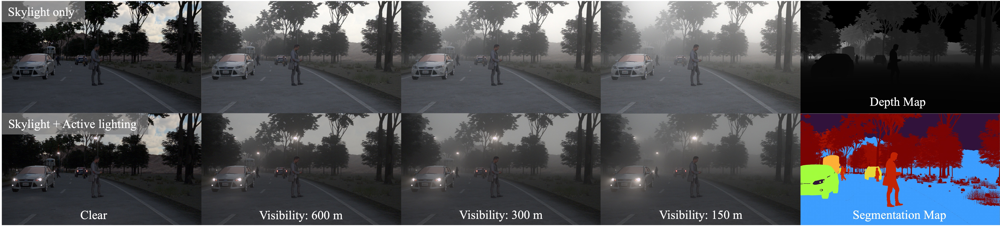
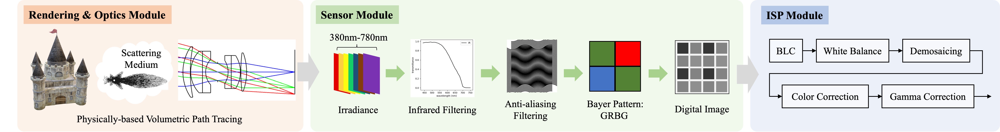
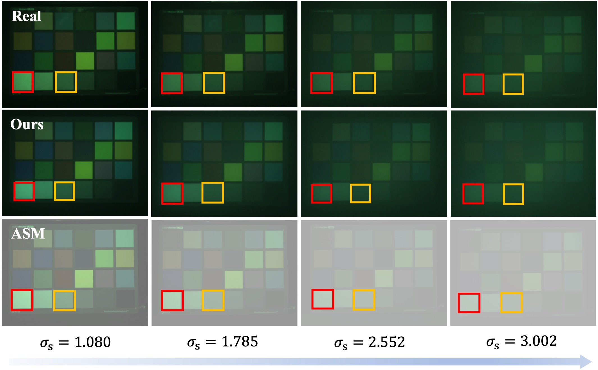
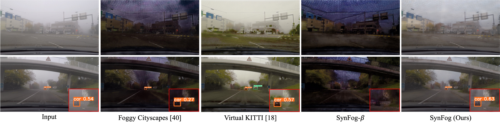

Abstract
To advance research in learning-based defogging algorithms, various synthetic fog datasets have been developed. However, existing datasets created using the Atmospheric Scattering Model (ASM) or real-time rendering engines often struggle to produce photo-realistic foggy images that accurately mimic the actual imaging process. This limitation hinders the effective generalization of models from synthetic to real data. In this paper, we introduce an end-to-end simulation pipeline designed to generate photo-realistic foggy images. This pipeline comprehensively considers the entire physically-based foggy scene imaging process, closely aligning with real-world image capture methods. Based on this pipeline, we present a new synthetic fog dataset named SynFog, which features both sky light and active lighting conditions, as well as three levels of fog density. Experimental results demonstrate that models trained on SynFog exhibit superior performance in visual perception and detection accuracy compared to others when applied to real-world foggy images.
End-to-end Simulation Pipeline
We propose an end-to-end approach for generating photo-realistic foggy images that incorporates accurate light transportation in scattering medium and physical characteristics of optics and sensor into the synthesized images. The simulation pipeline consisting of two components: a) Foggy scene radiance is rendered using volumetric path tracing. b) The radiance data is processed through a physically-based camera model, which comprises optics, sensor and image processing to faithfully replicate real camera devices.
Experiments
a. Fog Chamber Validation
We establish an indoor fog chamber to validate the fidelity of our fog simulation pipeline. It can be seen that images simulated through our pipeline exhibit a closer resemblance to real-captured foggy images.
b. Transferability across the Real-to-Virtual Gap
Benefiting from the high authenticity of the SynFog dataset, models trained on it can effectively generalize to real foggy images and produce naturally colored defogged images. Conversely, models trained on the other two datasets display poorer generalization to real data, resulting in artifacts and color distortion in defogged images.
c. Algorithm Benchmarking
We use SynFog test set to assess several representative defogging methods. The results indicate the substantial room for improvement in existing defogging methods, especially when applied to more realistic fog datasets.

Conclusion
In this paper, we present an end-to-end foggy image simulation pipeline. Our approach utilizes volumetric path tracing to model a more precise light scattering process with global illumination. By incorporating a physically-based camera processing pipeline that includes optics, sensor and image processing, we can closely mimic the authentic capture process under foggy conditions. Additionally, we develop a new synthetic fog dataset, SynFog, to facilitate the research on defogging. Comprehensive experiments have validated the authenticity and reliability of the SynFog dataset.